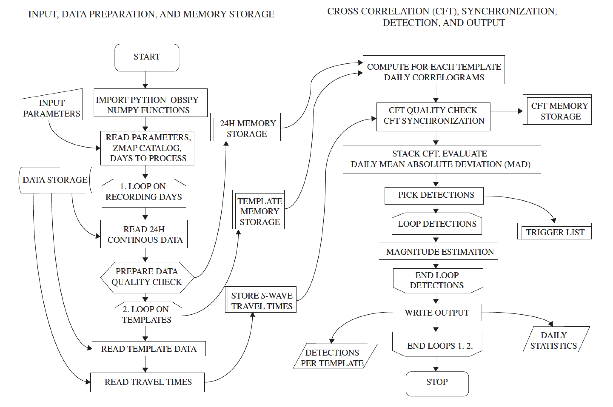

1. Introduction to the PyMPA package¶
This document is designed to give you an overview of the capabilities and implementation of the PyMPA Python package.
1.1. Motivation¶
PyMPA is designed to augment the detection capability of earthquakes, or any seismic signal (explosions or low frequency tremors) by using advanced routines different from the faster standard amplitude-ratio STA/LTA methods.
The technique allows to improve seismic catalogs decreasing the completeness magnitude and is particularly useful in detecting seismicity below the background noise level, and during a strong aftershocks sequence when the network sensitivity is lower. PyMPA is based on MFT search for earthquakes that resemble well-located events, termed templates (e.g., Shelly et al., 2007; Peng and Zhao, 2009; Yang et al., 2009; Kato et al., 2012; Zhang and Wen, 2015). The algorithm, which exploits ObsPy routines (Krischer et al., 2015), is versatile and supports most commonly used seismic data and earthquake catalog formats. A PyMPA flowchart is also shown below.
In addition to PyMPA, we develop other tools external to the main code to manage the input–output preparation and validation for (1) downloading data from Observatories and Research Facilities for European Seismology–European Integrated Data Archive (ORFEUS-EIDA) servers, (2) evaluating data quality, (3) selecting earthquakes as templates from a reference catalog, (4) trimming and filtering them from continuous waveforms, (5) avoiding redundant detections in the output, and (6) validating new events. This repository will continue to grow and develop and any modification will be reported in the github repository.
1.2. Supported environments¶
Linux, OSX and Windows environments running Python 2.7 and 3.x. We will stop support for Python 2.7 in a forthcoming release.
1.3. Functionality¶
Within input you will find the routines to generate templates, (create_template) select good templates (template_check), calculate travel times (calculate_ttimes), compute cross-channel correlations from these templates (pympa), process_detections (process_detections), and apply for visual inspection (verify_detection)
1.4. Running tests¶
For running tests examples are provided in the github subdirectories, tests are recalled when modifications are performed to the codes and a TRAVIS CI report is released.
You can also run these tests by yourself locally to ensure that everything runs as you would expect in your environment.
Although every effort has been made to ensure these tests run smoothly on all supported environments , if you do find any issues, please let us know on the github page.
1.5. References¶
Shelly, D. R., G. C. Beroza, and S. Ide (2007). Non-volcanic tremor and low frequency earthquake swarms, Nature 446, 305–307.
Peng, Z., and P. Zhao (2009). Migration of early aftershocks following the 2004 Parkfield earthquake, Nature Geosci. 2, 877–881.
Yang, H., L. Zhu, and R. Chu (2009). Fault-plane determination of the 18 April 2008 Mount Carmel, Illinois, earthquake by detecting and relocating aftershocks, Bull. Seismol. Soc. Am. 99, 3413–3420.
Kato, A., K. Obara, T. Igarashi, H. Tsuruoka, S. Nakagawa, and N. Hirata (2012). Propagation of slow slip leading up to the 2011 Mw 9.0 Tohoku-Oki earthquake, Science 335, 705–708.
Zhang, M., and L. Wen (2015). An effective method for small event detection: Match and locate (M&L), Geophys. J. Int. 200, 1523–1537.
Krischer, L., T. Megies, R. Barsch, M. Beyreuther, T. Lecocq, C. Caudron, and J. Wassermann (2015). ObsPy: A bridge for seismology into the scientific Python ecosystem, Comput. Sci. Discov. 8, no. 1, 014003, doi: 10.1088/1749-4699/8/1/014003.